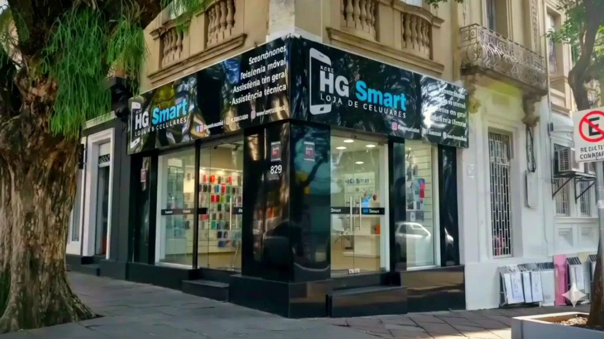
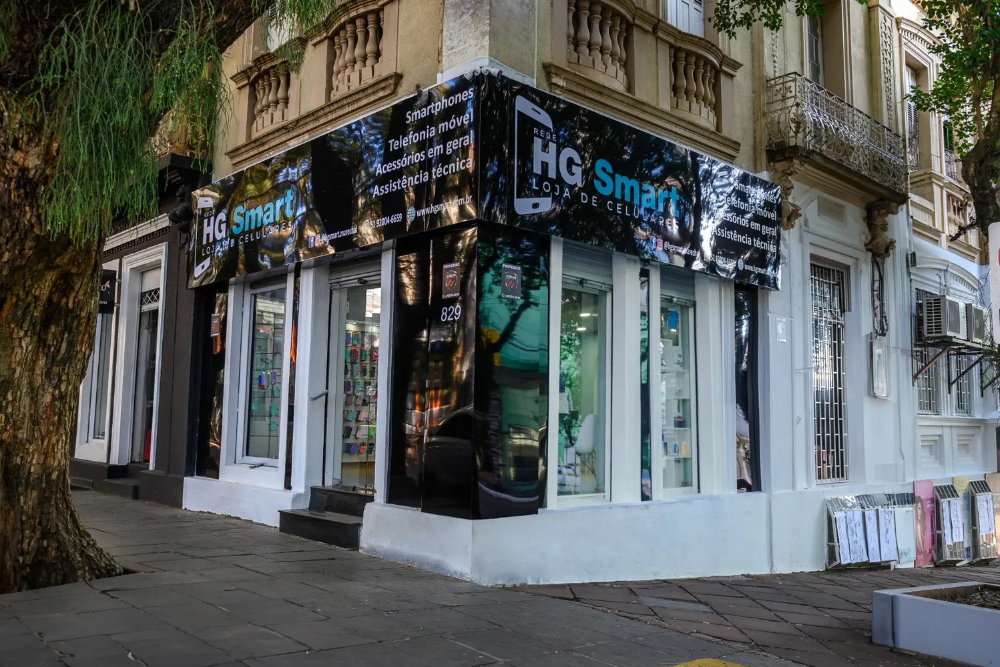
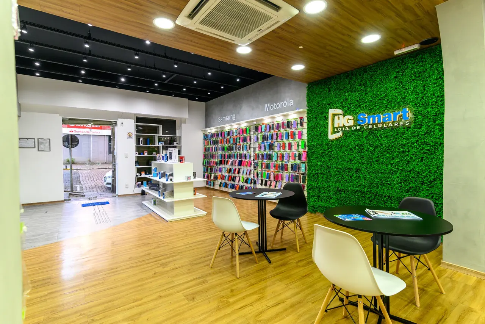
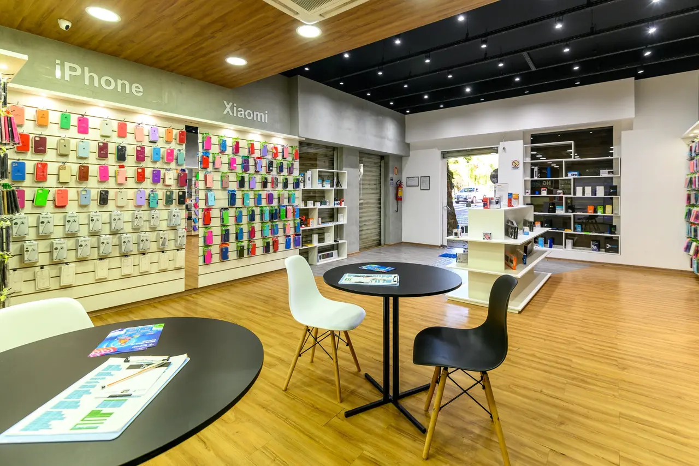

Tecnologia não devia
ser privilégio.
Dez lojas no Rio Grande do Sul, montadas para atender quem outras lojas recusam. Esta é a Rede HG Smart.
Role para conhecer ↓

Dez lojas no Rio Grande do Sul, montadas para atender quem outras lojas recusam. Esta é a Rede HG Smart.
Role para conhecer ↓
Uma loja de rua, na esquina de sempre.
A HG Smart começou com uma loja e a ideia de vender para quem não conseguia comprar em outro lugar. Hoje são dez unidades no Rio Grande do Sul — e a próxima já tem cidade.
Por dentro, o mesmo padrão em todas.
Loja de rua, no centro da cidade, com vitrine, expositor aberto e gente para atender. O aparelho fica à vista, a condição sai na conversa, e você leva no mesmo dia.



E a marca, no fim do corredor.
Novos, seminovos e usados — com o estado sempre declarado antes da compra. Nove marcas nas prateleiras, das principais às de entrada.


Novos, seminovos e usados, com garantia e procedência. À pronta entrega — você escolhe e sai com o aparelho.
Conta de luz, boleto, Crédito CLT, cartão, à vista e troca do usado. Aprovação facilitada, inclusive para quem está negativado no SPC e no Serasa.
Fones, caixas de som, carregadores, power banks, smartwatches, Alexa, suportes e adaptadores.
Películas HG Fiber e HG Premium de hidrogel, aplicadas na loja, e as capinhas HG Smart.
Assistência técnica especializada e a opção de estender a garantia no momento da compra.
A operadora do Grupo Hermes: planos, ativação, portabilidade e recarga, nas próprias lojas.
Rede HG Smart · Grupo Hermes · Rio Grande do Sul